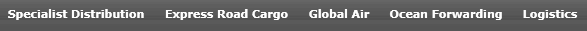
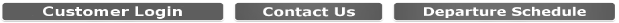

< header > … < ⁄ header >
Хедер можно разделить на 2 части: 1) Логотип (слева), 2) контакты и меню (справа).
Нельзя не заметить, как логотип (муравей) и слоган были расположены по всей ширине страницы, что не совсем соответствовало нынешним тенденциям, да и на черном градиентном фоне смотрелось не очень привлекательно. Поэтому, для улучшения восприятия они перенесены в левый верхний угол. В таком случае лого помещается в одну линию с меню навигации и экономит визуально место.
Меню в ранней версии было не минимизировано, большой ширины за счет пунктов, которые имели несколько слов в каждом, и довольно мелкий шрифт. В связи с этим могли быть сложности восприятия. Чтоб взаимодействие с ним было легче, его нужно минимизировать. Для этого пункты меню 
(Specialist distribution, express road cargo, global air, ocean forwarding, logistics) - сжаты в один пункт под названием "Services", т.к. по смыслу функции этих пунктов очень схожи.
Так же, хорошему дизайну не совсем соответствовали 3 статичные кнопки перед футером 
(Customer login, contact us, departure schedule). Даже их расположение, скорее всего, заставило бы пользователя растеряться, не говоря о их вертикальной “сплющенности”, который вызывает визуальный диссонанс. В связи с этим, кнопки изменили свою локацию. "Customer login" - перешла в правый верхний угол и имеет отличающийся дизайн от основных кнопок. "Contact us" – функция этой кнопки на исходном сайте ровно такая-же, как и пункта в меню "Get a quote", поэтому она убрана, а "get a quote" выделена и вынесена в верхнюю часть хедера, чтобы вовлечь пользователя оставить комментарий. Кнопка "Departure schedule" – также находилась ниже основного контента, и явно была выделена от пунктов основного меню (в хедере). Поэтому она находится в основном меню, ближе к середине страницы, для лучшей видимости и имеет большой размер относительно всех остальных кнопок. В таком случае пользователю будет легко попасть на страницу с расписанием.
Что касается в целом хедера, мы имеем:
• Логотип слева, служащий ещё как ссылка на домашнюю страницу
• Справа ниже основное меню, состоящее из пунктов по одному слову, с верхним регистром, достаточным отступом и увеличенного шрифта для улучшения восприятия.
• Справа сверху контактная информация, чтоб быстро найти контакты без лишних кликов, кнопка для отзыва, и кнопка для логина пользователя.
< body > … < ⁄ body >
Далее, для визуального контраста стоит картинка широкого формата, на которой изображен грузовик с логотипом на кузове. Она добавляет уверенности пользователю в том, что это именно та услуга, которую он искал.
Контент, а именно таблица приобрела совсем другой вид. Ранее она была одним блоком, имела маленький шрифт внутри и довольно темные оттенки. Поскольку сейчас эра мобильных девайсов, сделать редизайн и не включить адаптацию под смартфоны – было бы не совсем корректно. Поэтому таблица разделена на две: Import и Export. Так, как дизайн делался по сетке bootstrap, которая состоит из 12 колонок - эти две таблицы соответственно занимают в ширине страницы по 6. При открытии на телефоне этой страницы – таблицы будут расположены последовательно вертикально и за счет этого не будут терять свою видимость.
Что касается внешнего вида таблицы – её шапка выполнена в основном цвете страницы сайта (красном), основная колонка со странами выделена от контента таблицы голубым цветом, что позволяет легче ориентироваться в таблице. Границы колонок и строк ярче выражены, а также при наведении мыши подсвечивается одна строка, что поможет оставаться взглядом на одной линии.
< footer > … < ⁄ footer >
Футер выполняет функцию дополнительной быстрой информации, быстрого перехода по основному меню, контактной информации. Имея другой, темный фоновый цвет – показывает пользователю, где заканчивается контент. Состоит из 4 блоков информации: 1 – быстрый переход по ссылкам, остальные 3 – информация о местоположении компании и контакты. Так же быстрые ссылки включают пункт “Terms & conditions”. Такая разметка специально для адаптивности футера, то есть при уменьшении размера экрана блоки не будут уменьшаться в размере, а переходить на новую строку. По сравнению с предыдущим дизайном – новый благоприятнее для восприятия за счёт своего размера, с достаточными отступами и достаточным размером шрифта.